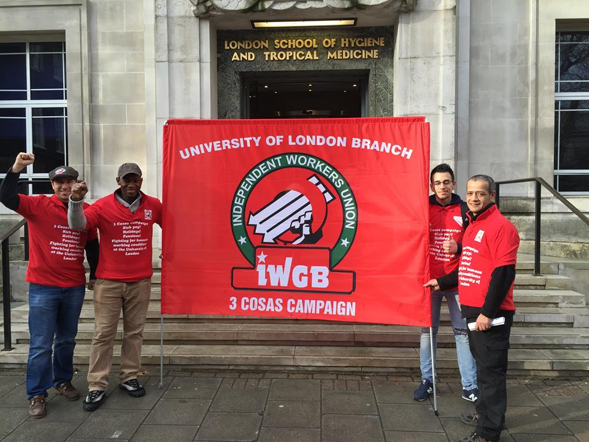

Wobbling to Victory: Are militant unions anarchist wreckers or the future of the labour movement?
Submitted on Sun, 11/08/2015 - 2:23pm
By Dek Keenan - Union Solidarity International, November 5, 2015
In recent years, new or rediscovered forms of worker self-organisation have begun to appear – and often in the most unlikely of places.
Small independent unions, using a combination of often audacious direct action tactics combined with innovative campaign strategies are bringing victories to some of the most marginalised and precarious groups of workers. Punching way above their weight, these dynamic new (and some not so new) unions are fighting to win and organising with few or no full-time officials and on shoestring budgets.
Are they the work of anarchist wreckers, alien to the traditions of the labour movement, or do they offer a way out of the impasse that our movement finds itself in?
In London, new unions such as the United Voices of the World (UVW) and Independent Workers Union of Great Britain (IWGB) have been at the forefront of precarious, out-sourced and greatly migrant labour struggles. Recent high profile fights for the Living Wage, for sick pay and the reinstatement of union activists at the Barbican and at Sotheby’s auction house have brought the UVW into the media spotlight.
The first signs in the UK of this ‘new unionism’ were seen in 2011 when the Industrial Workers of the World (IWW), the famous ‘Wobblies’, organised a Branch for cleaners in London, recruiting dissatisfied members of Unite associated with the Latin American Workers Association (LAWA).
This Branch built on the existing community of solidarity in the LAWA and, through the establishment of workers’ advice clinics, language classes and much aggressive outreach by unpaid activists, expanded beyond the Latin American community to other groups of cleaners searching for an effective voice at work. London Living Wage victories at Canary Wharf and elsewhere followed, heightening the profile of the IWW and paving the way for subsequent initiatives from the UVW and IWGB.
Europe and the Global South
In the autumn 2014, in Berlin, the Free Workers Union of Germany , a small anarcho-syndicalist union founded in the 1970s, but with roots much older, led a struggle of Romanian construction workers against the Mall of Berlin. This struggle, which has become known as the Mall of Shame campaign, began when the workers, ignored by mainstream unions, were massively underpaid for work undertaken, subjected to threats from management and denied written employment contracts. The Romanian builders turned to the FAU as a union ready to campaign for what they were owed. Under the slogan ‘Pay the Workers!’ consistent demonstrations and protest pickets at the luxury mall have brought attention to the plight of the many thousands of migrant workers, super exploited in Germany. The fight has now moved into the courts.
In Italy, a grassroots union, SI-COBAS, has been organising with migrant labour (predominantly from North, East and sub-Saharan Africa and India) working in Bologna’s multinational warehouse and logistics sector. Contending with aggression from employers, police and organised crime, their direct action and community building tactics have won significant victories. Meanwhile, in Poland and Germany, members of the syndicalist Workers Initiative union and rank and file members of the mainstream Verdi union are working in cross-border co-operation in Amazon warehouses in both countries and organising against a vigorously anti-union employer.
The workers of the global south have, as ever, been leading the way with a growing movement of independent collective organisation amongst some of the most historically marginalised workforces including the informal sector and homeworkers. Even amongst traditionally unionised workforces, member dissatisfaction with their recognised unions has led some workers to create autonomous parallel organisations, one example being the Pempilai Orumai (Women Workers Solidarity), created by women tea plantation workers in Kerala India. In South Africa, many workers’ realisation that the post-Apartheid Tripartite Alliance of the ANC, the Communist Party and the Congress of South African Trade Unions (COSATU) has done little to defend them from the neo-liberal onslaught are establishing independent, fighting unions such as the farmworkers unions CSAAWU and Sikhula Sonke, the latter a predominantly female workers union.
What is notable about these new unions is that, against the odds, they have actually been winning. The victories are often achieved through a combination of imaginative direct action, building solidarity alliances with social movement actors, an intelligent use of social media and a form of unionism which has put active membership participation at its centre. Workers in these unions tend to see ‘the union’ as their own collective creation and activity. Their relationship to ‘the union’ is not one of passivity. They do not wait to have things done for them, but use their organisational structures to do things for themselves. This sort of unionism, which in some ways is only possible because members and activists are not mired in traditional trade union practice, has all the hallmarks of that much maligned variant of worker organisation known as syndicalism.
Syndicalism
Syndicalism, today often identified with anarcho-syndicalism, is a current which emerged in the late 19th Century workers movement which is explicitly anti-capitalist, pre-disposed to using direct action rather than waiting upon parliamentary change, opposed to ‘partnership’ with employers but committed to directly democratic structures emphasising workers’ autonomy in the workplace. In the early 20th Century this revolutionary syndicalism constituted a large part of the global labour movement. However a rapid decline following the emergence of Communist parties and the rise of fascism saw the movement eclipsed or crushed. By the post-1945 settlement syndicalism had almost vanished. Now, with neo-liberal global capitalism throwing away partnership, privatising without restraint and returning to the bad old days of ‘wild’ capitalism, syndicalist and syndicalist-style organising is re-emerging to meet the challenges.
But syndicalist and other militant minority unions remain just that – minority. The question remains, if they can bring success, how can their approaches be mainstreamed to the benefit of the wider labour movement?
There are signs that this is starting to happen, albeit on a small scale and primarily amongst precarious workforces. Recent organising efforts by the Unite Hotelworkers in London have used similar approaches to the new unions, emphasising union democracy, participation and militancy, achieving results where old fashioned top-down organising has failed in the past. The Unite Hotelworkers express solidarity with other grassroots organising initiatives and there is mutual aid and respect between themselves and unions like the UVW, IWGB and IWW organising in related sectors.
This is good, but it is unfortunately the exception. The direct action unionists are often wary of the big TUC unions and with good reason. Some TUC union activists are wary of the newbies, accusing them of splitting the movement, an attitude usually based on a lack of awareness of the origin of new unions.
Whether this wariness can be overcome may be a key factor in the future success of the labour movement in the UK and globally. An open dialogue should be developed for our mutual benefit.
Disclaimer: The views expressed here are not the official position of the IWW and do not necessarily represent the views of anyone but the author’s.